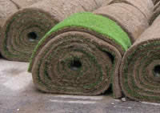

Activity: Grass for the Garden
You want to re-turf the garden Let us try and find out what it will cost! |
Your first step is to find the area. The Garden Area Activity shows you how.
Area of Garden m2 (or ft2): |
Now, you have two choices:
- buy seed (and enjoy watching the grass grow), or
- buy turf (and get instant weed-free results)?
Let us work out the cost of each.
Note: I include sample values, but you should use your own garden area, and also find out the cost of seed and turf where you live.

Seed
How much grass seed should I order?
You've already calculated the area of your garden, so now you will have to find out how much seed will cover each square meter, or each square foot.
This might also depend on which kind of grass seed you want to use, so you will have to decide that first.
You could visit your local garden center or farm supply store and read the instructions on the seed packet, or ask the store keeper for advice. Write down your choice here:
Type of Grass Seed: |
How Much Seed per m2 (or ft2): |
While you are at the store, collect some prices.
Packet Size: |
|||
Cost: |
Now you've got all the information, what kind of calculation will you need to do?
Example:
The area of my garden is 41m2
I found out from the local garden center that I will need 55g of seed for each m2.
So the total amount of seed I will need is:
41 × 55g = 2,255g
But the area calculation was only a rough estimate, so maybe I need to buy, say, 5% extra.
That makes 2,255g × 105% = 2,368g
Or about 2.4 kg
Tip: Always order a little more than you need!
Just in case your estimate is wrong, or some gets wasted.
Suppose the garden center only sells seed in 500g or 1kg packets. How many packets do I need to buy, and which is the most economical?
I could buy:
- Five 500g packets
- Three 500g packets and one 1kg packet
- One 500g packet and two 1kg packets
Which do you think is the cheapest way of doing it?
Maybe the third choice is the cheapest. It's usually more economical to buy larger quantities.
But watch out! Sometimes they might sell the smaller quantity at a special rate as a special promotion. Also check out the prices of different brands to get the best bargain.
Too Much?
But won't that be too much seed?
Yes, of course you will have some seed left over (unless you are very lucky), but you can keep some in case you need to reseed part of your lawn another time, or in case the birds ate some of the seed!
How much will it cost?
Once you know how many packets of seed you need, and what sizes, you can calculate the cost of the seed. That's easy.
Example: A 500g packet of seed costs $20 and a 1kg packet costs $35.
Your Turn:
| Packet Size | Quantity | Cost Per Packet |
Total Cost |
| Grand Total: | |||
Note: you might have to do the calculations using square feet, and find out the costs of different sizes of packet in 1lb packets and 2lb packets. But the idea's the same.

Turf
Some people prefer to use turf instead of seed. It may be easier and quicker to lay, but will it cost more?
The calculation should be fairly simple. First of all, decide which kind of turf you need.
Then all you need to know is the cost of 1m2 of turf (or 1ft2 of turf). Again, you should be able to find out this information from your local garden center or farm supply store.
Example: I found out from the local garden center that turf costs $4.20 per m2
I have an area of 41m2, but this was only a rough estimate, and I may lose some when cutting it to shape, say 10% extra.
That's 41m2 × 110% = 45m2
Then the cost of turfing my garden is 45 × $4.20 = $189.00
For me it costs about twice as much as seeding, but this is just an example. Try it for your own garden.
Turf Area |
Cost per Area |
Total Cost |
Note: you might have to do the calculations using square feet, and find out the cost per 1ft2 of turf.
Now you know the cost of both choices, which do you chose?
Your Choice: |